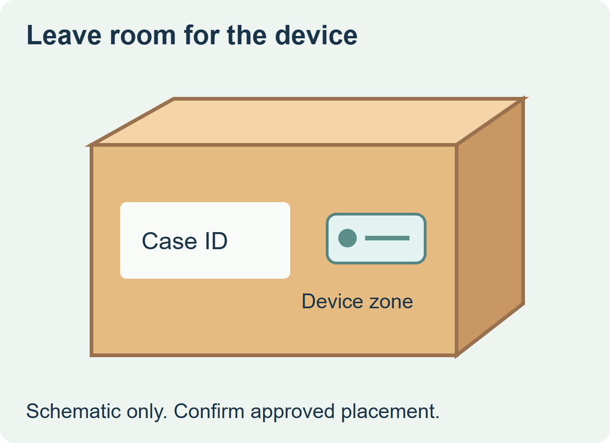
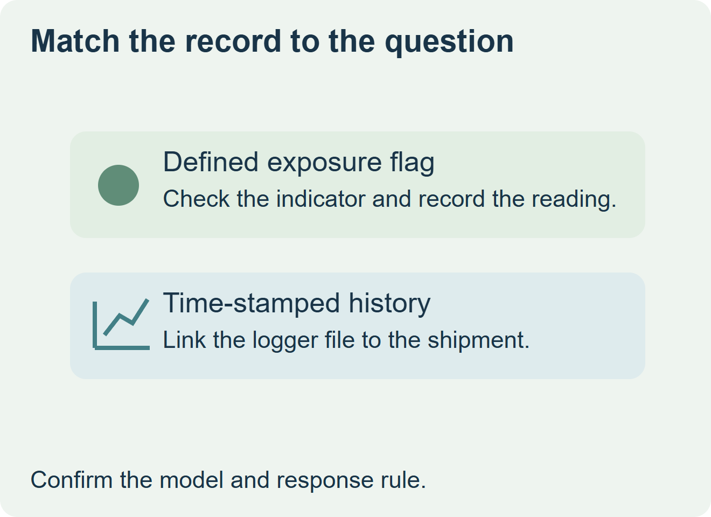

Choose a visual indicator for a defined receiving check. Choose a logger when the decision requires a time-stamped record. A chilled-food shipper may use both if the receiver needs a quick flag and the quality team also needs the history. Keep the ordinary printed case label readable and associate the chosen device with the case, pallet or shipment it represents.


Start with the evidence receiving will use
A threshold indicator and a cumulative time-temperature indicator answer different questions. A threshold device may show that its trigger condition was reached. A cumulative indicator can show how long it was exposed under the conditions defined for that model. A data logger can provide a sequence of readings at its configured interval. Ask for the model instructions, including activation and interpretation, and the receiver’s decision rule. Timestrip’s explanation of monitoring device types
| Receiving question | What to evaluate | Record with the case ID |
|---|---|---|
| Does receiving need a fast visual flag for a defined exposure? | Visual threshold indicator with the appropriate response and read window | Model, activation and reading, placement and the agreed follow-up. |
| Does the team need cumulative exposure under a defined condition? | Time-temperature indicator with the matching range and response | Activation, scale, duration interpretation and how the result is recorded. |
| Does the team need a chronological record? | Logger with the required range, sampling interval and data access | Device ID, location, start time and link to the downloaded record. |


Keep the temperature reading in scope
Decide whether the device observes case surface, surrounding air or another location approved by the quality team. A reading at one point on a load describes that monitoring location. It does not establish the temperature of every pack. For an indicator, confirm where staff can read it without removing the device or obscuring the case label. Confirm adhesion, visibility and any housing requirements using the device provider’s instructions.
For a hypothetical chilled ready-meal shipment, the receiver may need a visual flag on an outer case while the quality lead requires a logger record from a defined pallet location. Put the printed case ID, indicator location, logger ID and response instruction on the same handoff sheet. Have the quality team define hold and review procedures using the actual monitoring program; a display alone is insufficient to release food.
Quote the printed label and the monitoring device as distinct items. Confirm sensor supply, calibration and activation with the monitoring specialist. Give the label converter the device footprint and the case conditions so the readable identification zone stays clear.
Discuss the unresolved label requirement
Send the case surface and layout, case ID field, monitoring device footprint and intended placement, and the distribution exposure for the printed identification label. Confirm sensor selection and response rules with your monitoring provider and quality team. Review food label options and prepare a label specification inquiry. The contact page opens an email draft and lists email or WhatsApp for attachments. Supply, proof options, testing, pricing and timing require project confirmation.